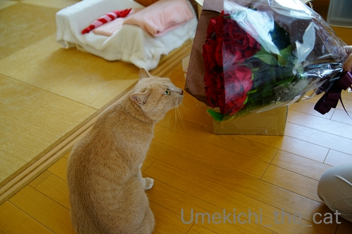
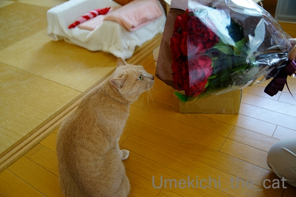

梅吉も喜ぶプレゼント [梅吉]
前記事で梅吉が入っていた箱。
縦置きにすると飛び込んでいきました。0(≧▽≦)0

おちり全開ですw

箱に入った後の「はて？」みたいな顔はなんなのでしょ(⌒-⌒;
この箱、「扇風機が入っていたと推測！」とコメントをいただきましたが（笑）
入っていたのは

これです！
私事ですが誕生日でした＾＾

近所の老舗和菓子屋さんのロールケーキも。
奇数月は季節のロールケーキ、偶数月はこの定番のつぶあんと求肥入りを扱ってます。
これがね、とーっても美味しいのです！
おっと、ありがとう！！
 ↑ガブッと一押し↑
↑ガブッと一押し↑
ビブグルマン２年連続獲得というボデガに行ってきました。
お店の売りは生地が自慢のナポリピザとの事なんですが〜
ピッツェリアか？というとむむむむむ・・・
お店のHPにはバスクの風が吹くって書いてあるしねぇ。
蒸し熱〜い日だったのでまずは喉を潤すレモンビールとブルックリンラガー。
ブルックリンラガーはかつてNYに醸造所が点在していた時代に作られていた
「ウィーンスタイル」のビールを再現したものなんですって。
（キリンから発売になってます。ネットでも入手可。）
飲み口爽やか後からガツンと苦味がやってきます。
レモンビールはちょっと甘めでグイグイ飲めます。
前菜盛り合わせ。この辺はフランス風？
前菜の中から食べたいものを告げて後は適当に見繕って盛り合わせてもらいました。
12時の位置から時計回りに
もち豚のパテ ド カンパーニュ、自家製豚肩ロースハム、ドライイチジクと生ハム
ピクルス、ポテトサラダアンチョビソースがけ、ラタトゥイユ
そして真ん中が人参のラペ。
このラペにクミンが効いててエスニックな感じ。とっても美味しかった！
子羊のアラブ風ソテー、だったかな・・・w
羊肉好きー！
付け合わせのジャガイモはカリッとほくほく。
この辺はスペインのかほりがするような・・・
ワインはバスク地方の「チャコリ」という微発泡の白をもらいました。
若飲みワインなのでアルコール度数も11.5度と低くて飲みやすいです。
バスクのチャコリはアラバ、ビスカヤ、ゲタリアの３地域で生産されているそう。
もちろんどの地方がどのあたりなんてちっとも知りませんでしたよ。
私たちが飲んだのはゲタリアのもの。
ゲタリアは海沿いの地域であることは地図で確かめました＾＾
ラベルにゴールドのバスク語で「Getariako Txakolina」って書いてあります。
ワインはこの他にグラスで赤白、そして更にビール：ハイネケン 生。ふふふ(ΦωΦ)
グラスワインはスペイン、イタリア。

メインのピザ。上がマルゲリータ、下がマリナーラ。
マリナーラはトマトソース、ガーリック、オリーブオイル、
あしらい程度のオレガノでシンプルに仕上げたピザです。
チーズで味をごまかせない分素材の良し悪しがダイレクトに出ると言われているのですが
ここは生地が最高に美味しくてどんどん食べられます。
マリナーラソースも旨し！！（ちょっと塩味が強いですが）
ピザはこの２種のみです。どちらか一枚、の場合にはマリナーラをお勧めします。
これでお腹いっぱい！大満足のごちそうさまでした＾＾
お店のご主人の好きなもの、得意なものを作ったらこうなったという感じのメニュー。
線で消してありましたが「水餃子」なんてのもかつてはメニューにあったらしい・・・
メニューの振れ幅が大きいと怪しくなるお店が多いですがこちらのお店は大丈夫です。
バスク風チーズケーキがあったのでテイクアウトしてきました。
最近コンビニスイーツにもなっているバスク風チーズケーキ「バスチー」。
初めて食べました。濃厚なお味！
普通のチーズケーキと何が違う？とレシピを見るとチーズと卵の使用量がとても多いです。
濃厚になる訳です。
表面の黒く焦げたものを「バスク風」としているお店もある様ですが
必ずしも焦がさねばならないということでもない様です。
近くを通ったらケーキだけテイクアウトするのもありだわ！
縦置きにすると飛び込んでいきました。0(≧▽≦)0
おちり全開ですw
箱に入った後の「はて？」みたいな顔はなんなのでしょ(⌒-⌒;
この箱、「扇風機が入っていたと推測！」とコメントをいただきましたが（笑）
入っていたのは

これです！
私事ですが誕生日でした＾＾
近所の老舗和菓子屋さんのロールケーキも。
奇数月は季節のロールケーキ、偶数月はこの定番のつぶあんと求肥入りを扱ってます。
これがね、とーっても美味しいのです！
おっと、ありがとう！！
ビブグルマン２年連続獲得というボデガに行ってきました。
お店の売りは生地が自慢のナポリピザとの事なんですが〜
ピッツェリアか？というとむむむむむ・・・
お店のHPにはバスクの風が吹くって書いてあるしねぇ。
蒸し熱〜い日だったのでまずは喉を潤すレモンビールとブルックリンラガー。
ブルックリンラガーはかつてNYに醸造所が点在していた時代に作られていた
「ウィーンスタイル」のビールを再現したものなんですって。
（キリンから発売になってます。ネットでも入手可。）
飲み口爽やか後からガツンと苦味がやってきます。
レモンビールはちょっと甘めでグイグイ飲めます。
前菜盛り合わせ。この辺はフランス風？
前菜の中から食べたいものを告げて後は適当に見繕って盛り合わせてもらいました。
12時の位置から時計回りに
もち豚のパテ ド カンパーニュ、自家製豚肩ロースハム、ドライイチジクと生ハム
ピクルス、ポテトサラダアンチョビソースがけ、ラタトゥイユ
そして真ん中が人参のラペ。
このラペにクミンが効いててエスニックな感じ。とっても美味しかった！
子羊のアラブ風ソテー、だったかな・・・w
羊肉好きー！
付け合わせのジャガイモはカリッとほくほく。
この辺はスペインのかほりがするような・・・
ワインはバスク地方の「チャコリ」という微発泡の白をもらいました。
若飲みワインなのでアルコール度数も11.5度と低くて飲みやすいです。
バスクのチャコリはアラバ、ビスカヤ、ゲタリアの３地域で生産されているそう。
もちろんどの地方がどのあたりなんてちっとも知りませんでしたよ。
私たちが飲んだのはゲタリアのもの。
ゲタリアは海沿いの地域であることは地図で確かめました＾＾
ラベルにゴールドのバスク語で「Getariako Txakolina」って書いてあります。
ワインはこの他にグラスで赤白、そして更にビール：ハイネケン 生。ふふふ(ΦωΦ)
グラスワインはスペイン、イタリア。
メインのピザ。上がマルゲリータ、下がマリナーラ。
マリナーラはトマトソース、ガーリック、オリーブオイル、
あしらい程度のオレガノでシンプルに仕上げたピザです。
チーズで味をごまかせない分素材の良し悪しがダイレクトに出ると言われているのですが
ここは生地が最高に美味しくてどんどん食べられます。
マリナーラソースも旨し！！（ちょっと塩味が強いですが）
ピザはこの２種のみです。どちらか一枚、の場合にはマリナーラをお勧めします。
これでお腹いっぱい！大満足のごちそうさまでした＾＾
お店のご主人の好きなもの、得意なものを作ったらこうなったという感じのメニュー。
線で消してありましたが「水餃子」なんてのもかつてはメニューにあったらしい・・・
メニューの振れ幅が大きいと怪しくなるお店が多いですがこちらのお店は大丈夫です。
バスク風チーズケーキがあったのでテイクアウトしてきました。
最近コンビニスイーツにもなっているバスク風チーズケーキ「バスチー」。
初めて食べました。濃厚なお味！
普通のチーズケーキと何が違う？とレシピを見るとチーズと卵の使用量がとても多いです。
濃厚になる訳です。
表面の黒く焦げたものを「バスク風」としているお店もある様ですが
必ずしも焦がさねばならないということでもない様です。
近くを通ったらケーキだけテイクアウトするのもありだわ！

カフェオレ色の梅吉

梅吉 2023年8月10日 永眠


梅吉と出会った譲渡会

犬猫の理由なき殺処分ゼロ
妄想広告
UMEKICHI 光

爆発的に早い！
時々攻撃的！
Thanks to Mr.Boss365
爆発的に早い！
時々攻撃的！
Thanks to Mr.Boss365

ちぃさんお誕生日おめでとうございます。
毎年必ずお花を贈るちぃおっと様きっと優しくてステキな方ですね。
梅吉さんも箱で喜んでくれて家族みんなで楽しめますねー。
by zombiekong (2019-08-22 01:12)
遅くなりましたが
お誕生日おめでとうございます♪
by ぽちの輔 (2019-08-22 06:29)
お誕生日おめでとうございます^^
by ニコニコファイト (2019-08-22 07:21)
ちぃさん、お誕生日おめでとうございます*\(^o^)/*
もしかして梅吉さんってば、自分も箱に入って
「プレゼントはわ・た・し！」ってネタだったりして( ^ω^ )
飛び込むお尻が萌えます=(^.^)=
by ニッキー (2019-08-22 07:22)
お誕生日おめでとうございました。
んも〜、早く言ってくだされば、ZEPETOでお祝いコーデやれたのに〜。
くつしたにゃんさんが一言挨拶で書かれていたので、あれ？とは思ったんですよー。ただ、一言挨拶がちゃんと表示されないケースにハマっちゃってチラっとしか表示されず、確証もてなかったの。
お花にケーキ、うらやましいですー。おっと様にnice!10個くらいお送りします〜。うちのパートナーに爪の垢を煎じて飲ませたいわ！
梅吉さん、箱にINのおちり丸見えも、箱から顔を出して「はて？」のお顔もかわいらしいですねぇ。和むわぁ。
by ChatBleu (2019-08-22 07:26)
お誕生日おめでとぉ～ございます♪
ステキなプレゼント(#^.^#)
嬉しいですね！！
梅吉さんからおちり全開のプレゼント？？
これまた嬉しいですねぇ～！！
by きぃ (2019-08-22 07:46)
お誕生日おめでとうございますー！！
美味いビールやワインがあれば、
蒸し暑い日本の夏も乗り切れますよねー(≧∀≦)
by よーちゃん (2019-08-22 08:50)
お誕生日おめでとうございます☆
美味しいもののプレゼント。
美味しい外ご飯♪iいいいですね！
バスク…と言うと私はスペイン/フランスという
イメージが強いのですがピザだし消してある
とはいえ水餃子があったりするのですね不思議。
（美味しかったら文句はないです(^^)）
by あとりえＳＡＫＡＮＡ (2019-08-22 08:58)
お誕生日お目出度うございます！
梅吉さんは段ボールで凄いことになっていますね(^^)
by ma2ma2 (2019-08-22 09:33)
梅吉くんプールのようにダンボールへダイブ！
でも海水パンツ履き忘れてますよ(笑)
お誕生日おめでとうございます＼(^o^)／
by yamatonosuke (2019-08-22 11:04)
お誕生日おめでとうございます＼(^o^)／
毎年お花とスイーツを欠かさない素敵なダーリン、いいな～いいな～♪
今日の記事を印刷して相方のパソコンに貼っておかなきゃ(≧▽≦)
梅吉さんの全開のオチリ、ピンクの肉球がたまらない～！！
倒れそうになったダンボールをサッと手で支えるところが愛ですね(#^^#)
美味しいお料理とたっぷりのワイン、最高のお祝いです^^
ドライイチジクとかアンチョビソース・・・ああワイン飲みたい(^▽^;)
by ゆきち (2019-08-22 12:47)
こんにちは。
すごい角度で撮影！！岩合さんも真っ青な感じのスーパーショットです！！
梅吉くん、頭部大丈夫かな？心配になります（笑）
扇風機ハズレ残念ですが、素敵な花束！！ご主人ナイスです。
ちぃさん、◯◯歳の誕生日おめでとうございます！！
バスクの風が吹く？スペイン？民族だとヨーロッパ・フランスまで広範囲ですね。
「前菜盛り合わせ」てんこ盛りで美味しそうです。
マスタードで食べる感じはウィーン・トイツ風かな？
「子羊のアラブ風ソテー、」も美味しそう。最近ラム肉食べてないです（涙）
メインのピザ！！手仕事感が炸裂して、これまた美味しそうです。
マリナーラ？食べた事ないですが、シンプルに生地味を楽しむ感じですね。
「バスチー」流行ってます。違いがよく分からない感じですが、普通に美味しいです。
テイクアウト？これは危険な香りします（笑）！？(=^･ｪ･^=)
by Boss365 (2019-08-22 13:07)
お誕生日でしたか(^^)おめでとうございます
ハッピーバースデーには カブッとひと押し押しならぬ 10押しくらいしたいものですね笑
by チャー (2019-08-22 13:53)
お誕生日おめでとうございましたー❤
ステキなバラーー(≧∀≦)ダンナさまステキぃ★
Happyな一年となりますように(*￣∇￣*)
そして梅ちゃんの鈴カステラもご馳走様です(爆w)
ボデガ、ご近所のお店でしょうか？
グランフロントにも同じ名前のスペイン料理屋が
あったのですが、別店ですよね？＾＾
ピッツァがウリというだけあって、めっちゃおいしそう❤
羊さんがお好きって北海道の人だなーと思っちゃいましたｗ
こっちで食べる羊さんとは味が違うのでしょうねｗ
バスチー、まだ試したことがないのですがよさげですね♪
チーズは苦手なのに、チーズケーキは好きという(((*≧艸≦)ﾌﾟﾌﾟｯ
by カトリーヌ (2019-08-22 15:32)
お誕生日おめでとうございます（^^
毎年素敵なお花を贈ってくれるご主人様もやるなぁ♪
梅吉さんもセットで大喜びキュンとする部分まで大サービスの大放出！
ピザがおいしそうワインが飲みたくなるラインナップぐびぐび飲めそう。
バスチー、私はまだ試しておりませんが濃厚と聞いたらこれまたワインと一緒に
いただきたい一品ですね。
by marimo (2019-08-22 16:50)
お誕生日おめでとうございます(^_^)
優しい旦那さんですね！近々家内の誕生日なので自分も見習うことにします(^_^)v
梅吉さん、すごいダイブですね(°0°)さすが猫さんです。
by kou (2019-08-22 18:15)
お誕生日おめでとうでした！！！
梅吉くんも見事なダイブで、美味しいところ(笑)を見せてくれてありがとうｗｗ
こうやってプレゼントを用意してくれる旦那様すてきだわ〜〜
わたし、まじで花を貰うこと無いので羨ましい。
どんだけ言っても買ってくれません(笑)
子羊ちゃん、美味しそうーーー。
かぶりつきたいよぉ。
バスク地方のチャコリ。知らなかったです。見かけたら注文してみよう。
この日は心置きなくたくさん飲みましたね^^
by リュカ (2019-08-22 19:54)
おたおめ♡です。
そして、おちりーー笑！
画面を開いた瞬間「キャッ」と声が出ちゃいました。
by liang (2019-08-22 20:37)
お誕生日おめでとうございます。
赤い薔薇の花でしょうか。
心がこもっていますね。
私は花を送った事がありません＾＾；
素晴らしい旦那様ですね＾＾
by riverwalk (2019-08-22 21:40)
おお。お誕生日だったのですね。
おめでとうございます。^^)
梅吉さん、まっさかさまにダイブするのですね。スゴイ。
マルゲリータ美味しそう♪
by yes_hama (2019-08-22 22:12)
お誕生日おめでとうございます！！
梅吉さんのダイブ最高(^^♪
素敵な食事！！素敵なバラの花と旦那様！！ダイブ最高梅吉さん！？
文句なしですね(^^♪
by 50oyaji (2019-08-22 22:13)
お誕生日おめでとうございます
お花のプレゼント素敵ですね
僕のところは「俺、花は花粉や香りが苦手やから無理」と
お花のプレゼントはしてもらったことがないです
by 藤並 香衣 (2019-08-22 23:26)
お誕生日おめでとうございます！
梅吉さんもまっさかさまダイブでお祝い♪
素敵なバラの花束、おっとさん優しいですね～＾＾
そしてなんと美味しそうなお料理～暑さも蒸し暑さも忘れるひとときですね＾＾
by sana (2019-08-23 15:51)
お誕生日、おめでとうございます！
バラを贈って下さるなんて、優しいダーリンですね。
これからも、二人＆一匹の楽しいブログを楽しみにしています～。
by angie17 (2019-08-23 16:00)
コメント、昨日は送信し忘れてたようですm(_ _)m
お誕生日おめでとうでした（笑）
花の香に引き寄せられて、箱にINした梅吉さん、
見事なダイブです。
魅力的なおチリが可愛いです（笑）
この時、梅吉さんはどんな真剣な顔をしているのかと
想像して楽しくなりました。
引越し先決まりました。
決めた途端に、良さそうなところが
次から次へ出てきて誘惑されそうで困ります（笑）
粗大ゴミ、今日は掃除機2台と無印良品のユニット棚を捨てたところです。
9月にも1件追加しました（笑）
申し込んでから10日から2週間かかりますので、
用心が必要です。
自分は必要なものだけしか所有してないと思っていますが、箱に詰めてみると意外とあるものです。
今回は私が死んだ後に家族が処分に困るような、
免許状やそれに関わる看板や表札を処分しました。
今まで40数年、引越しのたびに連れ歩きましたが、
もういいかなと思いました。
後から、写真を撮っておけば良かったと思いました。
もうありません（笑）
今日は外した棚板などを運びやすいように
まとめる作業をしました。
腕が心地よく痛いです（笑）
作業をしていると年齢というものをいやが上にも確認させられます（笑）
そして、5年先10年先を考えた時に、
一段と身軽になれたことを喜んでいるところです。
ボデガのレモンビール、ぜひ味わいたいです。
by kiki (2019-08-23 22:56)
お誕生日おめでとうございます！
薔薇の花束にケーキのプレゼント、新婚当初と
変らぬ愛情が感じられて素敵なご夫婦ですね。
梅吉さんのサービスショットにも惚れ惚れ(*^O^*)。
夜分に罪な美味しそう過ぎる画像の数々・・ううっ、
せめてチーズだけでも囓っちゃおうかしら(^Д^)？
by うりくま (2019-08-23 23:10)
お誕生日おめでとうございま〜す(^.^)
ダンナさまから100本(?)の赤い薔薇がっ!!!
ヅカのヒロインみたいじゃないですか〜♡
梅吉さんも、お祝いの大ジャ〜ンプね♪
by のらん (2019-08-24 08:13)
梅吉さんのおちり全開飛び込み、面白〜い♪
お誕生日おめでとうございます！
赤いバラを贈ってくれるって、なんてロマンチックな旦那様なの♡
ピザ屋さんに行くと、マルガリータばっかり頼みますが、ここは
マリナーラがおすすめなんですね^^。
by nachic (2019-08-25 19:38)
ピザ！メチャうまそうやね〜〜 ^ ^
私、これ系に関してはイタリア人になってしまいます！
by 小松達也 (2019-08-27 17:20)
ちぃさん、お誕生日おめでとう♪
お花をプレゼントしてくれる優しい旦那様でうらやましいわ。
梅吉くんのおちり全開・・・可愛すぎる～っ！！
by emi (2019-08-30 18:54)